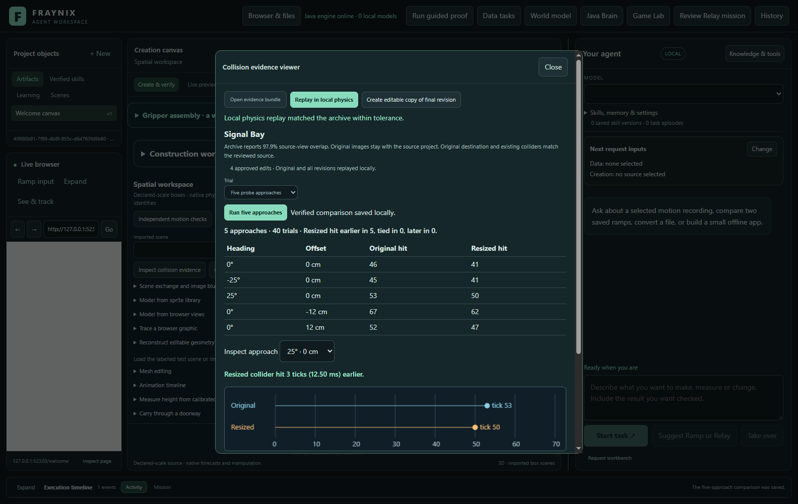
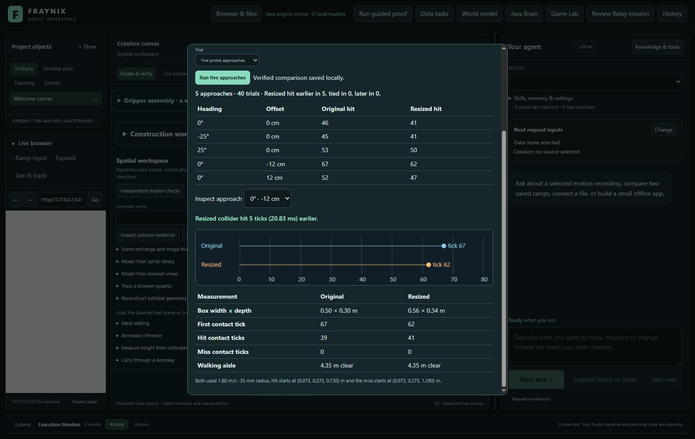
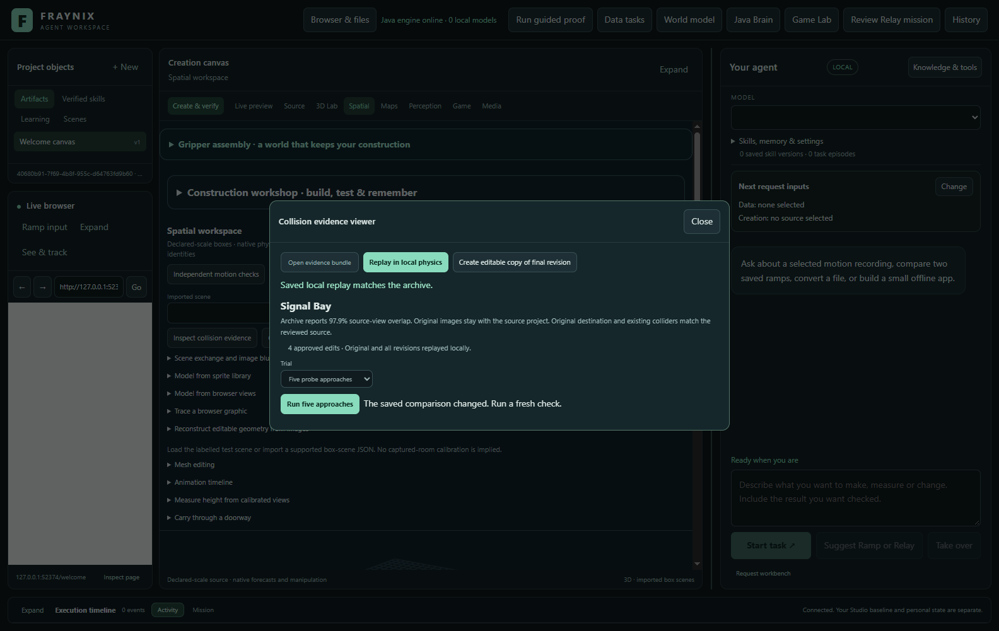

Compare colliders across five probe approaches
The resized Signal Bay collider made first contact 3–5 ticks earlier across five shared approaches. The 40 native trials reproduced their paired measurements.

Five measured approaches and the 25° contact timeline

Inspect the 12 cm offset after a desktop restart

The app withholds the result after the case order is altered
System files
Open source